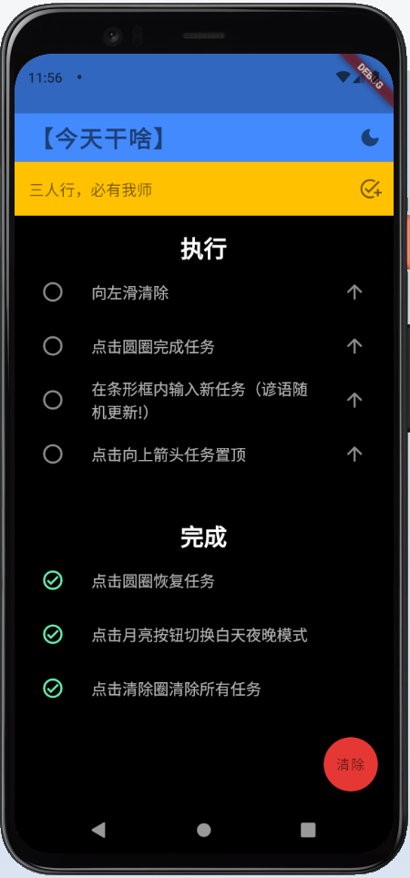
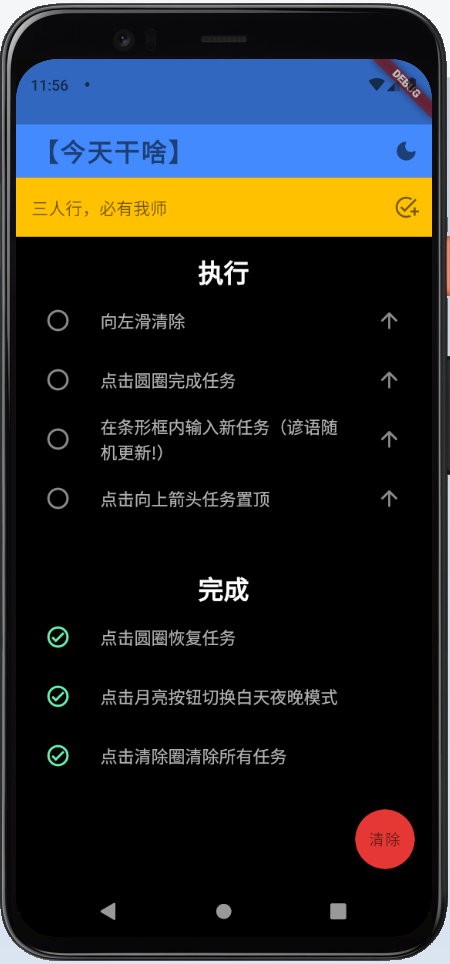

Schedule On 3 (Aug 2021)

For this application, I decided to solve a long-standing issue that my friends and I have had. We always had trouble scheduling events and hangouts due to everyone's busy schedules, so I created a smart scheduling app that automatically calculates possible dates available in three easy steps. I first wrote the algorithm in Python, and translated it into Flutter/Dart so I could use an app UI.
minima[list]
 

I have been curious about app programming for a while, ever since I learned frontend web development. How different could it be? So I decided to learn Flutter and Dart to program an app. This was the result! After reading the documentation, I decided to program a minimalistic scheduling app: minima[list]. This was because my mom and dad always complained about how the native scheduling apps like Google Calendar or Reminders were too complex and half the features they didn't use.
Thus, I programmed my app to have only the essentials: add and delete tasks, toggle tasks, prioritize tasks, and clear the list. I also provided a bonus randomly selected inspirational quote that shows up in the text field. Finally, I programmed in a dark mode which is easier on the eyes and can preserve battery life. My parents liked it so much they told me my uncle and cousins in China would probably love to use it to, so I made a version in Chinese and will be publishing it to the Google Play Store! I really enjoyed this project, and will for sure be making more apps in the future. I found my web and python background were very helpful and made the process of learning Flutter all the more intuitive as well.
Boids (Jun-Jul 2021)

I was interested in swarm intelligence, the behaviour of large groups of organisms, particularly after watching a murmuration of starlings chased by a bird of prey. Other cool examples include "bait balls" of fish formed during underwater feeding frenzies and locust swarms. This led me to research more into the emergent properties of swarms and how such complex behaviours can arise from a few simple rules, and I found a classic model by Craig Reynolds which I created in 2D. I am working on a version in 3D perhaps with obstacles and generations to simulate evolution by natural selection. In this model, "boids" fly according to three behaviours also observed in the natural world: separation-not crashing into another boid, alignment-staying in a flock for safety in numbers, and cohesion-steering towards the center of the flock because that is where it is safest (you can get picked off at the edge). I also created a predator class (red dot) and added the predation behaviour, steering away from predators. That way, I wanted to see whether the cool shapes and patterns flocks take is due to the fairly simple behaviours just detailed, or if perhaps they coordinate themselves on purpose to distract predators. Also see the links below for references and interesting reads.
Craig Reynolds' Boids pageStarling Flock
Fish Bait Ball
Bluevale Electric Car


Ever since my first year in high school, I loved working in Bluevale's renowned and very successful electric car team. I have developed my CAD design, fabrication, and programming skills whilst working on our car, and we have won numerous awards including the 2019 TADA Cup at the UW EV Challenge. During races, I have worked on the pit crew and am scheduled to drive, and I am one of the sub-team leaders in the club.
In the 2019-2020 season (my first year), I joined a team tasked with designing and building steering. I helped with the design and creation of the parts. We also helped other teams when they needed us.
In the next 2 years I worked on and eventually led our data collection and analysis. I really loved how software and hardware united here. Our cars have an onboard cycle analyst which collects race data such as battery percentage and speeds. We programmed the onboard devices and worked on creating a method to transfer data to the pits for analysis in real-time. After consultation with previous team members, I learned that the natural methods such as radio transfer didn't work, mainly because of the size and buildings at the race track. I settled on a new method: wifi transfer. Wifi would be reliable and fast, provided we had a wifi signal which the campus did. We have completed our first few prototypes and hope to test and use it this year. I really enjoy working with my friends and leading our data team!
Tissue Microarray for WilsonLab (Jan-Mar 2020)

During my short internship (sadly interrupted by the COVID-19 pandemic) at Dr. Jonathan Mark Wilson's lab in Laurier University I designed a tissue microarray mould at the MakerLab. I completed laboratory training and was scheduled to help with fluorescence microscopy of samples however the universities were closed shortly afterwards due to lockdown.